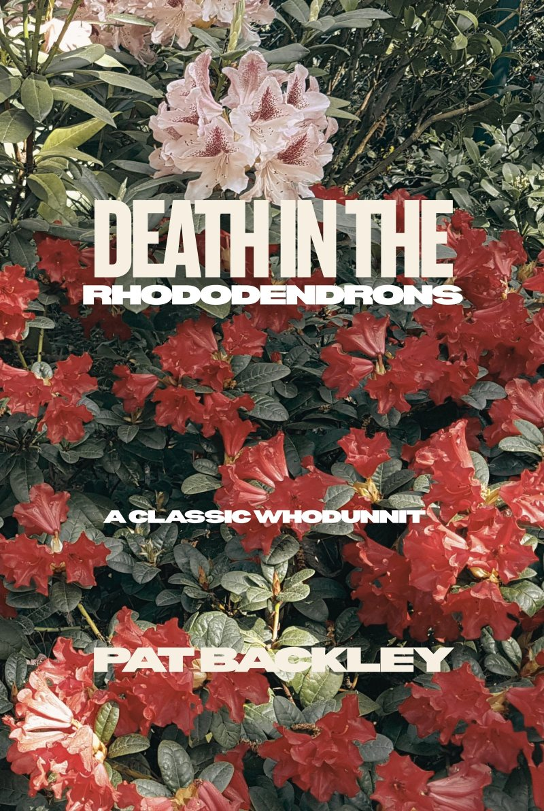
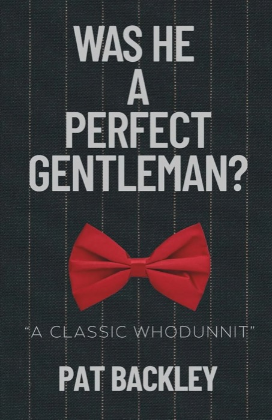

Death in the RhododendronsA classic whodunnit
On the day of the village garden show, someone is found dead beside the rhododendron bushes. East Forke is a sought after, traditional English country village, and under the hedges it runs on envy, lies and deceit. Plenty of people could have done it.
- Oh I know she looks like butter wouldn’t melt in her mouth now, but if you ask me, there’s something suspicious there!
- He sounds a right piece of work, but I can’t imagine he’d kill the old girl just to win first prize for his flowers.

Was He A Perfect Gentleman?Her first whodunnit
1988, a small seaside town in South East England. One dead bank manager, and a long list of people who held grudges against him. Did any of them hate him enough?
The rest of the shelf
- Novels
- Daisy (2020), her first, and The Second Daisy (2021)
- The Ancestry series
- Valentine George (2022), Lou and Eustace (2023), Dot & Ben (2024)
- Travel and memoir
- From There To Here, With An Awful Lot In Between; Seventy Years Worth of Travel; Is Travel Still Fun In Your Seventies? (2026)
- For anyone starting again
- The Abandoned Wives Handbook: A Gentle Guide to One of Life’s Great Traumas (2023)
Pat Backley
She emigrated at 59, published Daisy just before turning 70, and intends to write till she dies.
English born, now in Ōrewa, north of Auckland. Historical fiction from her own family’s stories, travel memoirs, a handbook for abandoned wives, and now crime.
Where to find her
A signed copy, with your name in it
Any of Pat’s books can come personalised and signed. Email her and say which one, and who it is for.
hello@patbackley.com